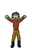

The Lapid Clinic
[
Home
/
Games
/
Projects
]
Here are some projects I have that aren't games (Which is very little)
ReChambered

A mirror of Notch's Legend Of The Chambered, useful if you didn't want to extract the zip to mod it.
See Github Page